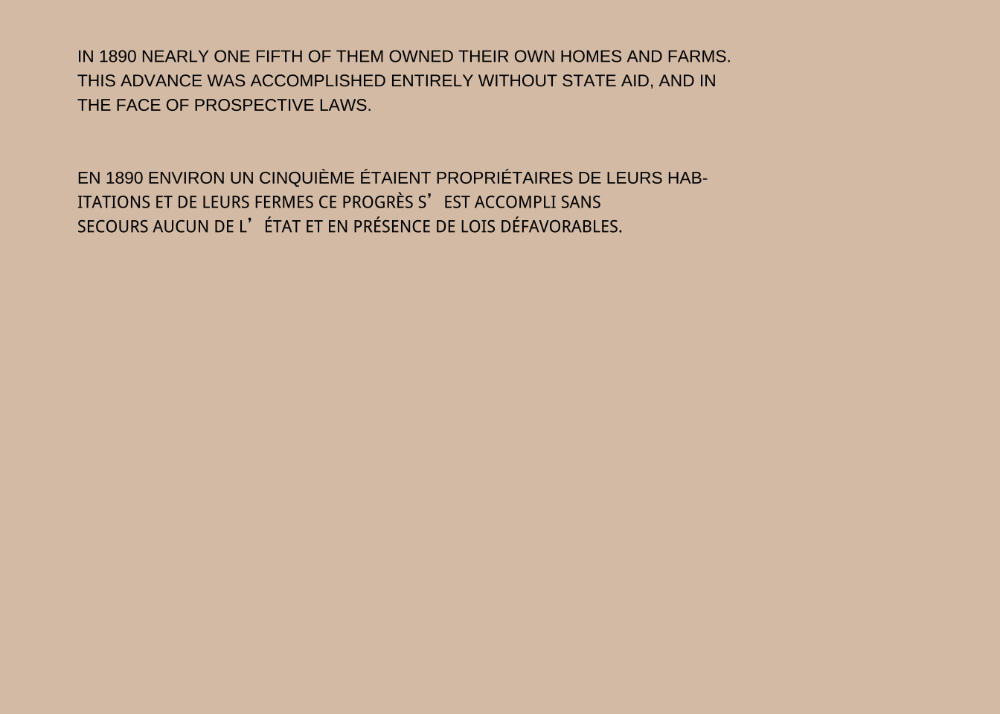

library(tidyverse)
library(patchwork)
library(showtext)
library(ggtext)
library(janitor)The Rise of Negroes from Slavery to Freedom in One Generation (plate 50), March 25
My goal this week is to recreate plate 50 developed by W.E.B Du Bois and his team for the 1900 Paris Exposition (as shown below).
, March 25")
The Rise of Negroes from Slavery to Freedom in One Generation (plate 50), March 25
Initially, I considered using the magnifying effect, because that is what it looks like the Du Bois was trying to create. You know where you have a chart and there is a portion of the chart that is blown-up/ or zoomed in to provide greater detail (see the example below). This effect can be achieved using the {ggmagnify} package in R, among others. However, after looking at the plate image more closely, it just looks like two separate charts, with dashed lines that suggest a relationship.

Using the
{ggmagnify}package to create a magnified inset of part of a ggplot object.
So, what I will do is create two different plots. Then place those plots on a canvas broken up into four quadrants. The bottom left will contain data from 1860 (i.e., the end of the US Civil War) and the top right will contain the chart with daat from 1890 (i.e., a generation removed from the end of the US reconstruction era).
There are a handful of packages that can achieve this effect, there is the grid.arrange() in {gridExtra}, there is also the {multiplot} package. However, ther one I have used with some frequency is the {patchwork} package. The rest of the chart is fairl straight-forward, as it appears to be two stacked bar charts, easily acheived with {ggplot} and the geom_bar() function. The color choices for the Du Bois team are interesting, and I think they are supposed to represent the tri colors of the Pan-African flag (i.e., the red, black and green)
LIBRARY
DATA AND DATA WRANGLING
It’s a very small and simple daata frame, but I need to make some minor data adjustments to facilitate plotting the data. Firstly, the source combined the data from 1860 and 1890. They are in essence two spearate data frames, as
df1 <- read_csv("data/data.csv") %>%
clean_names() %>%
filter(year == "1860") %>%
mutate(owners = "19",
tenants = "81") %>%
select(year, slave, free, owners, tenants) %>%
pivot_longer(cols = c(slave, free, owners, tenants),
names_to = "designation",
values_to = "percent") %>%
mutate(year = replace(year, designation == "tenants" | designation == "owners", "1890")) %>%
mutate(percent = as.numeric(percent))
df2 <- read_csv("data/data.csv") %>%
clean_names() %>%
filter(year == "1890") %>%
rename(owners = slave,
tenants = free) %>%
pivot_longer(cols = c(owners, tenants),
names_to = "designation",
values_to = "percent") %>%
mutate(percent = as.numeric(percent))COLOR PALETTE
# Background Color
bkgcol <- "#DCC6B3"
# Text Color
ttlcol <- "#000000"
subcol <- "#000000"
capcol <- "#000000"
txtcol <- "#000000"
# There are two plots essentially.
palette1 <- c("#2C8657", "#151515")
palette2 <- c("#B90021", "#2C8657")DEFINE THEME
I define the theme outside of the plot. It makes it easier to put together the plot.
theme_set(theme_minimal(base_size = 12, base_family = "text"))
theme_update(
plot.title.position = "plot",
plot.caption.position = "plot",
axis.title.x = element_text(margin = margin(t = 10, r = 0, b = 0, l = 0), size = rel(1), color = txtcol, family = "text", face = "bold"),
axis.title.y = element_text(margin = margin(t = 0, r = 10, b = 0, l = 0), size = rel(1), color = txtcol, family = "text", face = "bold"),
axis.text = element_blank(),
axis.line.x = element_blank(),
panel.grid.minor.y = element_blank(),
panel.grid.major.y = element_blank(),
panel.grid.minor.x = element_blank(),
panel.grid.major.x = element_blank(),
plot.margin = margin(t = 10, r = 10, b = 10, l = 10),
plot.background = element_rect(fill = bkgcol, color = bkgcol),
panel.background = element_rect(fill = bkgcol, color = bkgcol)
)CREATE PLOTS
I am putting the two plots on a canvas divided into four quardrants. Quadrant 01 will have text explaining the chart. Quadrant 02 will contain the 1890 plot, Quadrant 03 will be empty and Quadrant 04 will contain the plot from 1860. So I have to create that arrangement below.
PLOT 01
Just text explaining the data. To be assigned to Quadrant 01
plt1 <- ggplot() +
ylim(0, 100) +
xlim(0, 100) +
annotate("text", x = 0.95, y = 95, label = "IN 1890 NEARLY ONE FIFTH OF THEM OWNED THEIR OWN HOMES AND FARMS. \nTHIS ADVANCE WAS ACCOMPLISHED ENTIRELY WITHOUT STATE AID, AND IN \nTHE FACE OF PROSPECTIVE LAWS.", size = 3, hjust = 0, color = "#000000") +
annotate("text", x = 0.95, y = 75, label = "EN 1890 ENVIRON UN CINQUIÈME ÉTAIENT PROPRIÉTAIRES DE LEURS HAB-\nITATIONS ET DE LEURS FERMES CE PROGRÈS S’EST ACCOMPLI SANS \nSECOURS AUCUN DE L’ÉTAT ET EN PRÉSENCE DE LOIS DÉFAVORABLES.", size = 3, hjust = 0, color = "#000000")
plt1
PLOT 02
Contains plot for data from 1890 to assigned to Quadrant 02
plt2 <- df1 %>%
filter(year == "1890") %>%
ggplot() +
geom_bar(mapping = aes(x = "", y = percent, fill = designation),
stat = "identity", position = "stack", width = 0.4) +
scale_fill_manual(values = palette2) +
annotate("text", x = 0.95, y = 105, label = "1890", size = 5, hjust = 0, color = "#000000") +
annotate("text", x = 0.95, y = 90, label = "19%", size = 5, hjust = 0, colour = "#000000") +
annotate("text", x = 0.95, y = 50, label = "81%", size = 5, hjust = 0, colour = "#000000") +
annotate("text", x = 0.95, y = 42, label = "TENANTS \nMETAYERS", size = 2, hjust = 0, color = "#000000")
plt2PLOT 03
Contains plot for data from 1860 to be assigned to Quadrant 03
plt3 <- ggplot()
plt3
PLOT 04
Contains plot for data from 1860 to be assigned to Quadrant 04
plt4 <- df1 %>%
filter(year == "1860") %>%
ggplot() +
geom_bar(mapping = aes(x = "", y = percent, fill = designation),
stat = "identity", position = "stack", width = 0.4) +
scale_fill_manual(values = palette1) +
annotate("text", x = 0.95, y = 105, label = "1860", size = 5, hjust = 0, color = "#000000") +
annotate("text", x = 0.82, y = 95, label = "11%", size = 5, hjust = 0, color = "#000000") +
annotate("text", x = 0.95, y = 95, label = "FREE LABORERS \nOUVRIERS LIBRES", size = 2.5, hjust = 0, color = "#000000") +
annotate("text", x = 0.95, y = 50, label = "89%", size = 5, hjust = 0, color = "#B90021") +
annotate("text", x = 0.95, y = 45, label = "SLAVES \nESCLAVES", size = 2, hjust = 0, color = "#B90021")
plt4PLOTS TOGETHER
plt1 | plt4 / plt2 | plt3SAVE FILE
ggsave(paste0("challenge08_", format(Sys.time(), "%d%m%Y"), ".png"), dpi = 320, height=8.5, width = 11, limitsize = F)